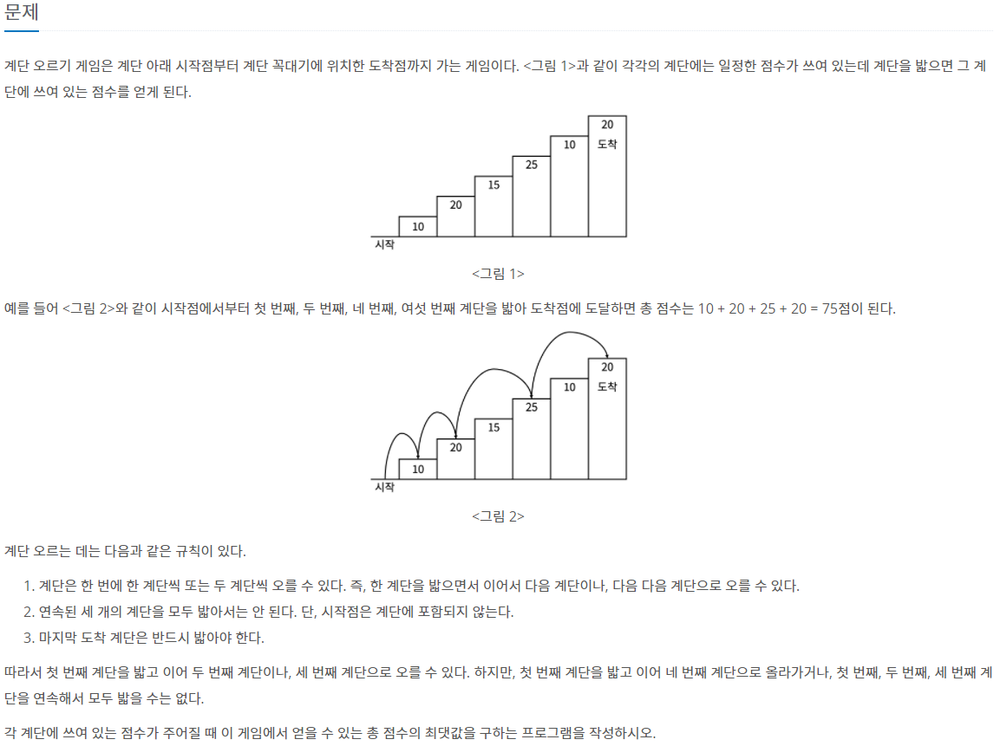
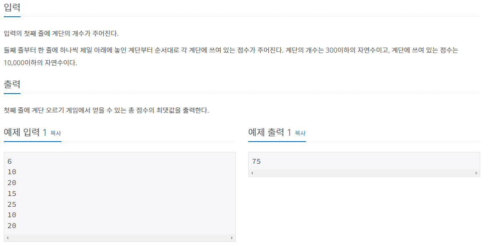
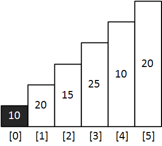
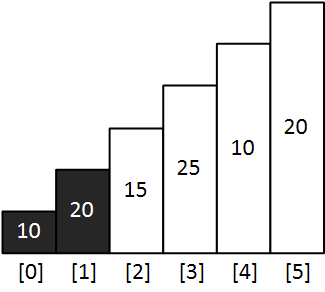
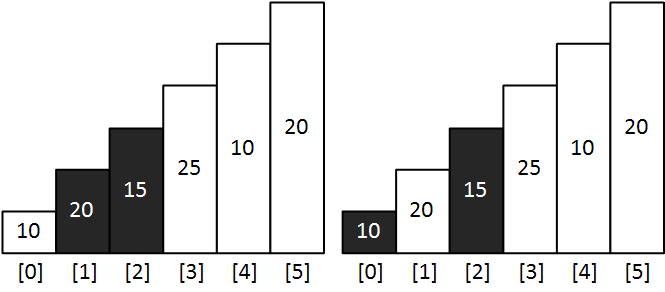
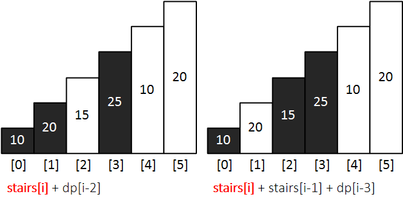
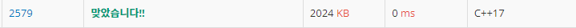

#INFO
난이도 : SIVLER3
알고리즘 유형 : Dynamic Programming
출처 : 2579번: 계단 오르기 (acmicpc.net)
2579번: 계단 오르기
계단 오르기 게임은 계단 아래 시작점부터 계단 꼭대기에 위치한 도착점까지 가는 게임이다. <그림 1>과 같이 각각의 계단에는 일정한 점수가 쓰여 있는데 계단을 밟으면 그 계단에 쓰여 있는 점
www.acmicpc.net
 
#SOLVE
DP의 Bottom-up 방식을 이용해 문제를 풀이했습니다.
* dp[i] - i 까지 최대 점수
* stairs[i] - 계단의 점수를 저장할 배열
단, 문제의 조건에 유의하여 점화식을 작성해야 합니다. 조건은 다음과 같습니다.
1. 연속된 3칸의 계단을 오를 수 없다.
2. 마지막 계단은 반드시 밟아야 한다.
dp[0]의 값은 0번째 계단을 오르는 것이 최적의 선택 이므로, stairs[0] 으로 초기화 합니다.

dp[1]의 값은 0번째 계단과 1번째 계단을 오르는 것이 최적의 선택 이므로, stairs[0] + stairs[1] 로 초기화 합니다.

dp[2]의 값은 1번째 계단 + 2번째 계단 or 0번째 계단 + 2번째 계단 중 더 큰 값으로 초기화 합니다.

// init
dp[0] = stairs[0];
dp[1] = stairs[0] + stairs[1];
dp[2] = max(stairs[0] + stairs[2], stairs[1] + stairs[2]);
dp[3] 부터는 점화식으로 작성 가능합니다.
stairs[i] 는 마지막 계단은 반드시 밟아야 한다는 조건을 충족하기 위해서 반드시 필요하고, 연속된 3개의 계단을 밟지 않는 두 가지 케이스로 분류됩니다. 따라서 두 가지 케이스 중 더 큰 값으로 초기화 해 주면 됩니다.

// dp
for (int i = 3; i < n; i++) {
dp[i] = max(stairs[i] + dp[i-2], stairs[i] + stairs[i-1] + dp[i-3]);
}
cout << dp[n-1] << endl;#CODE
#include <iostream>
#include <algorithm>
using namespace std;
int dp[301];
int stairs[301];
int main(int argc, char* argv[]){
int n;
cin >> n;
for (int i = 0; i < n; i++) {
cin >> stairs[i];
}
// init
dp[0] = stairs[0];
dp[1] = stairs[0] + stairs[1];
dp[2] = max(stairs[0] + stairs[2], stairs[1] + stairs[2]);
// dp
for (int i = 3; i < n; i++) {
dp[i] = max(stairs[i] + dp[i-2], stairs[i] + stairs[i-1] + dp[i-3]);
}
cout << dp[n-1] << endl;
return 0;
}